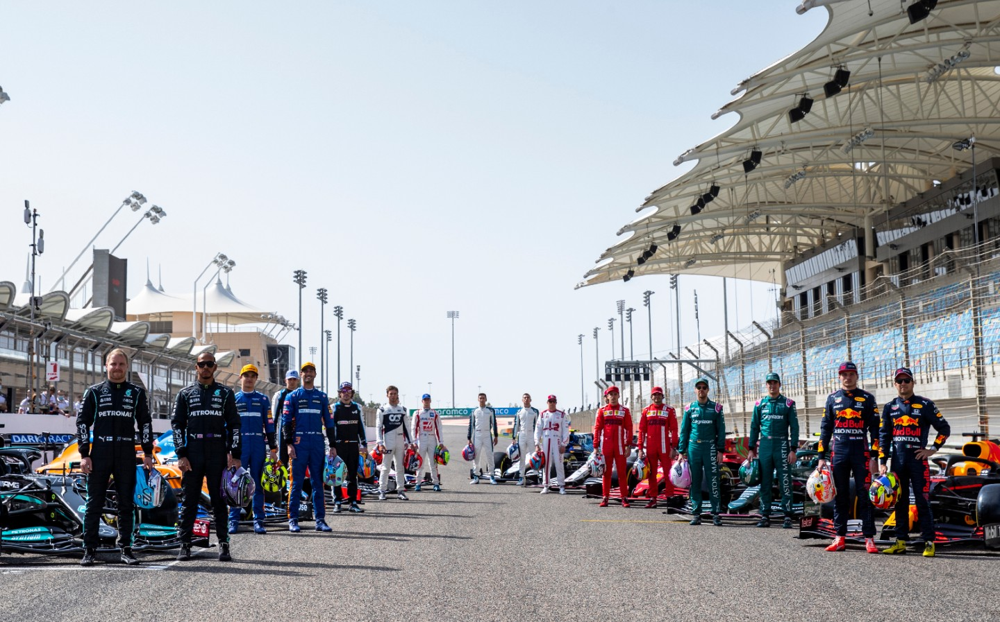

A FORMULA 1-RŐL
A Formula-1 a legrangosabb nemzetközi autóverseny-sorozat, melynek szabályait a Nemzetközi Automibil Szövetség (FIA) határozza meg. A Fromula-1-es világbajnokságban nyitott karosszériájú, együléses versenyautók vehetnek részt. A versenysorozat több állomásból, Grand Prix-ből (nagydíjból) áll, amelyeket szilárd burkolatú, erre a célra kialakított zárt, vagy városi pályákon rendeznek. Az eredmények alapján évente két világbajnokot avatnak, egy egyénit és egy konstruktőrit. A versenyeket több százmillióan nézik a televízión, a világ több mint kétszáz országában.

RÉSZLETEK
Az első Formula-1-es világbajnokságot 1950-ben rendezték. A Formula-1 történelmi központja Európa, ahonnan a dohányreklámok tilalma, valamint a feltörekvő ázsiai országok gazdasági nyomása miatt kezd kiszorulni. Ma már a világ számos pontján tartanak Formula-1-es nagydíjat, többek között Azerbajdzsánban, Kínában, Bahreinben és Szingapúrban. 2020-ban rekordszámú huszonkettő versenyt rendeztek, ebből kilencet Európában, azonban a kirobbant koronavírus járvány miatt a teljes 2020-as versenynaptár változott. 1986 óta folyamatosan megrendezik a Formula-1 magyar nagydíjat, a versenysorozat sokáig egyetlen olyan futamát, amelyet volt szocialista országban rendeztek.